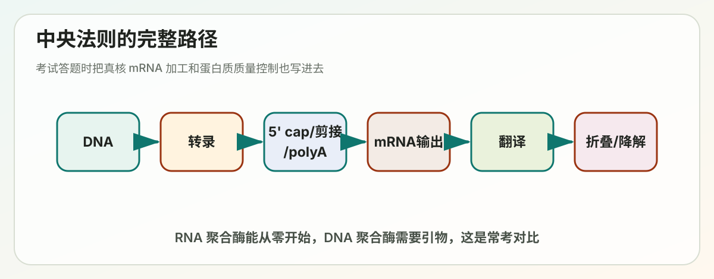
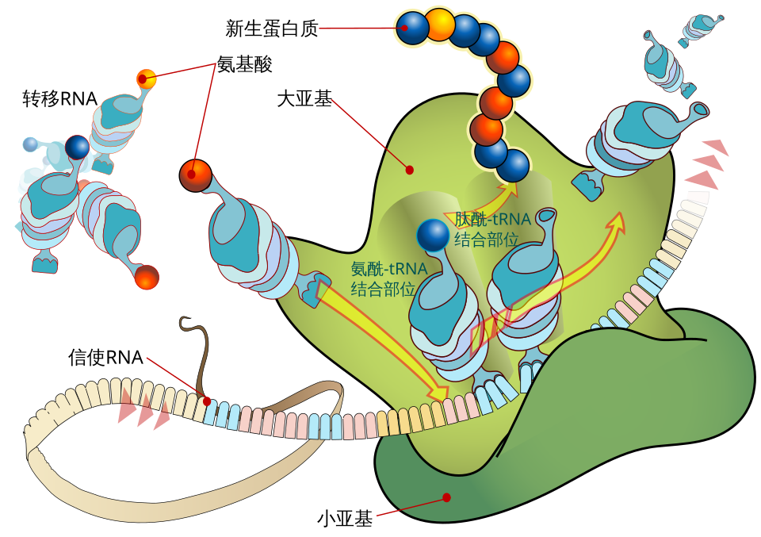

Lecture 06
第6讲学习讲义：From DNA to Protein


对应课件：Lecture_6_From_DNA_to_Protein.pdf
这一讲是分子生物学最经典的主线：细胞如何读取基因组。 你可以把它理解成两大步：
- 从 DNA 到 RNA：转录和 RNA 加工。
- 从 RNA 到蛋白质：翻译和蛋白质量控制。
这讲的核心问题
- RNA 聚合酶和 DNA 聚合酶有什么相同与不同？
- 原核和真核的转录起始机制有什么差异？
- 真核 mRNA 为什么必须经过加工？
- 核糖体如何把密码子翻译成氨基酸序列？
- 翻译后如果蛋白折错了，细胞怎么办？
一、中央法则：先把整条主线画出来
中央法则 central dogma 说的是信息流主方向：
- DNA 复制 DNA。
- DNA 转录 RNA。
- RNA 翻译 蛋白质。
你要注意两点：
- 这是主方向，不代表不存在特殊情况，比如逆转录。
- 这条主线不是“背口号”，而是整门课程后面所有机制的骨架。
二、RNA 聚合酶和 DNA 聚合酶：像，但不一样
课件专门比较了两者，这是因为初学者很容易把它们混成一类。
相似点
- 都以核酸模板为指导。
- 都依赖碱基配对原则。
- 都沿 5' -> 3' 方向合成新链。
不同点
- RNA 聚合酶使用 NTP，DNA 聚合酶使用 dNTP。
- RNA 聚合酶通常可以 de novo 起始，不需要引物。
- RNA 聚合酶合成的是单链 RNA。
- RNA 聚合酶准确率低于 DNA 聚合酶。
- RNA 通常是短期工作分子，DNA 是长期遗传载体。
为什么 RNA 聚合酶容错率可以更低：
- RNA 的错误不一定会永久遗传。
- 一条 mRNA 的寿命较短，错误影响范围相对有限。
三、细胞里有哪些 RNA
课件提到不同 RNA species。你至少要熟悉：
- mRNA：编码蛋白。
- rRNA：核糖体核心成分。
- tRNA：把氨基酸带到核糖体。
- snRNA：参与剪接。
- 还有很多调控 RNA。
理解重点：
- mRNA 不是细胞里数量最多的 RNA。
- rRNA 往往占总 RNA 最大比例，因为核糖体非常多。
四、原核转录起始：重点是启动子和 sigma 因子
1. 启动子 promoter 是什么
启动子是 RNA 聚合酶和相关因子识别并开始转录的 DNA 区域。
它不是被转录成蛋白的编码序列，而是“起跑位置和规则说明”。
2. TATA 到底是什么
很多同学在这一讲里会看到 TATA，但要分清它出现在哪个系统里。
在原核经典启动子里，常见有两段共识序列：
- -35 区域常见 TTGACA。
- -10 区域常见 TATAAT，也常叫 Pribnow box。
这里的 TATAAT 是一段富含 A/T 的 DNA 序列。因为 A-T 碱基对只有两条氢键，比 G-C 更容易被打开，所以这类序列有利于 DNA 局部解开，帮助转录起始。
你可以先记住一句话：
- 原核里课件提到的 TATAAT，通常是在说启动子的 -10 元件。
- 真核里说的 TATA box，通常是在说另一类启动子核心元件，位置和识别蛋白都不同。
3. 原核转录为什么相对直接
原核生物没有核膜把转录和翻译分开，所以：
- 转录可以更快启动。
- mRNA 往往不需要真核那样复杂的加工。
4. sigma 因子的意义
sigma 因子帮助 RNA 聚合酶识别特定启动子序列。
你可以把它理解成：
- 核心酶本身会合成 RNA。
- sigma 因子帮助它“找到正确入口”。
在细菌里，sigma 因子识别的往往就是启动子中的 -35 和 -10 等特征序列，所以你看到 TATAAT 时，应该立刻联想到：这是 RNA 聚合酶 holoenzyme 在找起始位点时的重要线索。
5. 启动子强弱
不同启动子序列对聚合酶的吸引能力不同，这就导致：
- 有的基因容易被大量转录。
- 有的基因平时转录很弱。
五、哪一条 DNA 链会被转录
双链 DNA 并不是两条链同时转录成同一段 RNA。
对某个具体基因来说：
- 其中一条作为模板链 template strand。
- RNA 与模板链互补。
- 另一条非模板链又常叫 coding strand，因为它与 RNA 序列相同，只是 T 换成 U。
这个概念后面分析基因序列时非常重要。
六、真核转录起始：复杂得多，因为调控层级更高
真核生物中，尤其是 RNA Pol II 转录，需要多种通用转录因子 general transcription factors。
为什么真核更复杂
- DNA 被染色质包装。
- 基因组大且调控精细。
- 不同细胞类型需要高度差异化表达。
核心思路
真核转录起始通常不是“一个酶自己到位”，而是：
- 启动子和核心元件先被识别。
- 通用转录因子逐步装配。
- RNA Pol II 被招募。
- 再由激活蛋白、Mediator 等额外因子提高效率和特异性。
这里课件里出现的 TATA box，通常指真核某些启动子在转录起始位点上游大约 -25 左右的一段 A/T-rich 序列。TFIID 里的 TBP 会先结合这段 DNA，并让局部 DNA 弯曲，帮助后续转录起始复合体装配。
所以不要把两种情况混在一起：
- 原核常说的是 -10 区域 TATAAT。
- 真核常说的是 TATA box 和 TBP 结合。
七、RNA Pol II 与激活蛋白 activator
课件提到 additional factors 和 activator 的作用。
激活蛋白常通过以下方式增强转录：
- 帮助招募转录机器。
- 改变局部染色质状态。
- 促进复合体稳定组装。
- 与远端增强子配合。
这说明真核转录不是简单的“开或关”，而是一个组合调控系统。
八、转录延长：不是起始完就结束了
转录起始只是第一关。RNA 聚合酶进入 elongation 后，需要：
- 保持前进。
- 处理 DNA 模板局部打开与关闭。
- 避免过早停顿或脱落。
在真核细胞中，RNA Pol II 的 C-terminal domain，简称 CTD，很重要。
九、CTD 为什么是平台 platform
课件说 CTD acts as a platform to recruit mRNA processing factors。
意思是：
- 转录不是孤立发生。
- 很多 RNA 加工步骤和转录是耦联的。
CTD 像一个可招募不同因子的“停靠平台”，让：
- 5' 加帽因子。
- 剪接相关因子。
- 3' 端加工因子。
在合适时机被带到新生 RNA 附近。
十、为什么真核 mRNA 必须加工
原核 mRNA 常常能边转录边翻译，但真核不行，因为：
- 转录发生在细胞核。
- 翻译发生在细胞质。
- 真核初级转录产物 pre-mRNA 往往还不能直接用。
所以真核 mRNA 常要经历：
- 5' 端加帽。
- 剪接。
- 3' 端加 poly(A) 尾。
- 核输出。
十一、5' cap：帽子不是装饰
5' cap 的作用很重要：
- 保护 mRNA 不易被降解。
- 帮助后续核输出。
- 帮助核糖体识别并启动翻译。
你可以把它理解成一个“合法身份标签”。
十二、外显子、内含子与剪接
1. 什么是 exon 和 intron
- Exon 外显子：最终成熟 mRNA 中保留下来的片段。
- Intron 内含子：会被剪掉的片段。
2. 剪接为什么重要
如果不剪接：
- 蛋白编码序列会被打断。
- 翻译出来的蛋白往往错误。
3. 剪接如何发生
课件提到：
- 特定序列标记剪接位点。
- 五种 RNA 分子识别信号。
这指向剪接体 spliceosome，它是由 snRNA 和蛋白组成的大复合体。
4. 为什么剪接不是简单剪刀
剪接不仅是去掉废段，它还能带来：
- 可变剪接 alternative splicing。
- 一个基因产生多种蛋白产物。
- 真核复杂度上升。
课件还提到 exon definition，说明真核剪接常通过识别外显子边界来提高准确性。
十三、3' poly(A) tail：尾巴也不是装饰
poly(A) 尾的主要作用：
- 增加 mRNA 稳定性。
- 帮助核输出。
- 提高翻译效率。
所以成熟 mRNA 通常有“帽”和“尾”，两端都经过加工。
十四、成熟 mRNA 如何离开细胞核
mRNA 不是自由扩散出核，而是：
- 经过加工并被特定蛋白包装。
- 通过核孔复合体输出到细胞质。
这个步骤也是质量控制的一部分：
- 加工不完整的 RNA 通常不该被放行。
十五、从 RNA 到蛋白质：翻译的总图景
翻译是把核苷酸语言转换为氨基酸语言。
中间关键中介是：
- 密码子 codon。
- tRNA。
- 核糖体 ribosome。
十六、遗传密码 genetic code
遗传密码的基本特点：
- 三个核苷酸组成一个密码子。
- 大多数密码子指定一种氨基酸。
- 存在起始密码子和终止密码子。
- 遗传密码有简并性，也就是多个密码子可编码同一种氨基酸。
这就是为什么 wobble 配对会成为可能。
十七、tRNA 如何“翻译”密码子
tRNA 有两个关键区域：
- 一端连接氨基酸。
- 另一端用反密码子 anticodon 识别 mRNA 上的密码子。
wobble 配对是什么
密码子第三位与反密码子第一位有一定灵活性，因此：
- 一个 tRNA 可以识别多个相关密码子。
这提高了翻译系统效率，又不必为每个密码子都准备完全不同的 tRNA。
十八、谁把正确氨基酸装到正确 tRNA 上
这一步靠 aminoacyl-tRNA synthetase，氨酰 tRNA 合成酶。
这类酶极其重要，因为它们决定：
- 某个反密码子最终对应哪种氨基酸。
如果这一步错了，后面密码子识别再准也没用。
十九、核糖体如何工作
核糖体是翻译机器，不只是一个支架。它负责：
- 读取 mRNA。
- 容纳 tRNA。
- 催化肽键形成。
- 推动翻译循环向前进行。
课件提到翻译的四大步骤，可概括为：
- 起始 initiation。
- 延长 elongation。
- 终止 termination。
- 核糖体回收 recycling。
二十、翻译如何决定从哪里开始
在理论上 mRNA 上可能有很多 AUG，但真正起始需要上下文和起始机制配合。
你先记住：
- 起始并不是看到任何 AUG 就开始。
- 必须有起始复合体和合适信号。
起始 tRNA 携带的是甲硫氨酸 Met，这是翻译进入编码区的标准起点。
二十一、终止密码子不是给 tRNA 识别的
Stop codons 的作用是终止翻译。
它们并不是对应某种氨基酸的 tRNA，而是由释放因子识别，使多肽链释放。
二十二、多核糖体 polysome：为什么一个 mRNA 能高效产蛋白
一个 mRNA 上通常不只有一个核糖体。
多个核糖体可以同时沿同一 mRNA 翻译，这叫多核糖体或多聚核糖体。
意义：
- 同一条 mRNA 可快速产出大量蛋白。
- 提高资源利用效率。
二十三、抗生素为什么能抑制蛋白合成
课件提到 antibiotics as inhibitors of protein synthesis。
很多抗生素利用了原核翻译系统与真核的差异，特异干扰：
- 核糖体功能。
- tRNA 结合。
- 肽链延长。
这也是基础生物学和医学连接的典型例子。
二十四、翻译准确性和质量控制
翻译虽然不像 DNA 复制那样极致高保真，但仍然需要相当准确。
准确性来源于多层把关：
- 正确的 aminoacyl-tRNA 合成酶装载。
- 正确的密码子-反密码子识别。
- 核糖体对配对几何的监控。
二十五、无义介导的 mRNA 降解 NMD
如果 mRNA 过早出现终止密码子，细胞会认为它可能有问题，并通过 nonsense-mediated mRNA decay 将其清除。
这是为了避免：
- 产生截短、有害蛋白。
二十六、蛋白质刚翻译出来还不算结束
新生多肽离开核糖体后，还会经历：
- 折叠。
- 定位。
- 修饰。
- 质量检测。
共翻译折叠 co-translational folding
很多蛋白在还没完全合成完时，已经开始折叠。
分子伴侣 chaperone
伴侣蛋白会帮助新生多肽避免错误聚集，提高折叠成功率。
二十七、如果蛋白折错了怎么办
课件后半部分强调 protein quality control。
细胞会通过：
- 分子伴侣尝试重折叠。
- 泛素-蛋白酶体系统降解。
- 某些情况下转入溶酶体相关通路。
泛素化 ubiquitination
课件提到泛素通过三步被加到蛋白上，这对应经典 E1、E2、E3 体系。
核心意义：
- 给异常或该被清除的蛋白打上“处理标签”。
蛋白酶体 proteasome
多聚泛素化蛋白常被送往蛋白酶体降解。
二十八、蛋白错误折叠与疾病
错误折叠不是小问题，它和很多疾病有关，例如：
- 神经退行性疾病。
- 某些遗传病。
- 朊病毒相关疾病。
Prion 朊病毒为什么特别
它不是靠核酸传播信息，而是异常折叠状态可诱导正常蛋白也变成异常构象。
这打破了很多人对“遗传信息只能靠核酸传递”的直觉，是非常特殊的分子病理现象。
二十九、把这一讲串成一句话
细胞先用 RNA 聚合酶把 DNA 信息转录成 RNA，并在真核中通过加帽、剪接和加尾把 pre-mRNA 加工成熟；随后核糖体、tRNA 和遗传密码共同把 mRNA 翻译成蛋白质；最后细胞再通过伴侣蛋白和降解系统保证蛋白质量。
三十、常见误区
- “RNA 聚合酶和 DNA 聚合酶差不多”不对，起始方式和错误容忍度都不同。
- “内含子就是没用片段”不对，剪接和可变剪接非常重要。
- “看到 AUG 就一定起始翻译”不对。
- “mRNA 做完就直接变成蛋白”不对，真核里中间有大量加工和输出步骤。
- “蛋白合成完功能就稳定确定了”不对，后续折叠和质量控制同样关键。
三十一、你必须会的关键词
- Central dogma：中央法则。
- Promoter：启动子。
- Template strand：模板链。
- RNA polymerase II：RNA 聚合酶 II。
- CTD：羧基末端结构域。
- 5' cap：5' 加帽。
- Splicing：剪接。
- Exon / Intron：外显子 / 内含子。
- Poly(A) tail：poly(A) 尾。
- Codon：密码子。
- Anticodon：反密码子。
- Wobble pairing：摆动配对。
- Ribosome：核糖体。
- NMD：无义介导降解。
- Ubiquitin：泛素。
三十二、自测题
1. RNA 聚合酶和 DNA 聚合酶最关键的差异是什么？
答题关键：
- RNA 聚合酶可 de novo 起始，不需要引物。
- 使用 NTP，错误率更高。
2. 真核 mRNA 为什么必须加工？
答题关键：
- 需要稳定、识别、剪接正确编码区并完成核输出。
3. 一个 tRNA 为什么能识别多个密码子？
答题关键：
- 第三位密码子存在 wobble 配对灵活性。
4. 决定“正确氨基酸装到正确 tRNA 上”的关键酶是什么？
答题关键：
- Aminoacyl-tRNA synthetase。
5. 为什么细胞需要 NMD 和泛素-蛋白酶体系统？
答题关键：
- 清除错误 mRNA 和错误折叠或异常蛋白，进行质量控制。
三十三、考前速记版
- 中央法则主线是 DNA -> RNA -> 蛋白质。
- 原核转录相对直接，真核转录和 RNA 加工更复杂。
- 真核成熟 mRNA 需要加帽、剪接、加尾和核输出。
- 遗传密码通过 tRNA 和核糖体被翻译成氨基酸序列。
- 翻译起始、延长、终止和回收构成完整翻译循环。
- 伴侣蛋白、NMD 和泛素-蛋白酶体系统负责质量控制。
三十四、深入扩展：把转录按步骤真正讲清楚
很多同学会背“initiation, elongation, termination”，但真正不会答题的原因是每一步内部在发生什么并不清楚。下面把转录循环拆开。
原核转录循环的细化步骤
1. RNA polymerase holoenzyme 在 sigma 因子帮助下识别启动子。 2. 先形成相对松散的闭合复合体 closed complex。 3. DNA 局部解链，形成开放复合体 open complex。 4. 聚合酶开始合成最初几个核苷酸。 5. 经历若干 abortive initiation，也就是先短暂合成几个很短 RNA 又丢掉。 6. 聚合酶成功逃离启动子 promoter escape。 7. sigma 因子作用下降，进入稳定延长阶段。 8. 到达终止信号后终止转录并释放 RNA。
为什么会有 abortive initiation
因为刚起始时：
- 聚合酶还紧紧抓着启动子。
- RNA 还很短，不够稳定。
- 酶从“起始状态”切换到“高效延长状态”需要一个构象转换过程。
所以一开始做出几个短 RNA 又失败，并不奇怪。
三十五、为什么 RNA polymerase 能 de novo，而 DNA polymerase 不行
这两个酶的差别非常常考。
DNA polymerase 的设计目标
- 极高保真。
- 高效长距离复制。
- 与 proofreading 紧密耦联。
代价是：
- 它的活性位点要求已有 primer-template 结构和 3'-OH。
RNA polymerase 的设计目标
- 能从启动位点直接起始。
- 对短期信息传递足够好即可。
所以它接受了：
- 更低的保真度。
- 更适合“从零起步”的活性位点结构。
你可以把它理解成：
- DNA polymerase 是“高精度长跑选手”。
- RNA polymerase 是“能自己起跑的中距离选手”。
三十六、真核转录起始复合体 PIC 是怎么组装的
PIC 就是 pre-initiation complex，转录前起始复合体。
零基础阶段你不需要死背每个因子的名字顺序，但要理解装配逻辑：
1. 核心启动子先被识别。 2. 通用转录因子逐步组装。 3. RNA Pol II 被带到位点。 4. 其他因子帮助打开 DNA。 5. CTD 磷酸化等事件促使聚合酶从起始转向延长。
为什么真核需要这么多通用转录因子
因为真核面对的问题更复杂：
- 启动子周围常被核小体包装。
- 调控需要与增强子、染色质重塑和细胞类型程序耦联。
- 需要更细的时空精度。
所以真核不是“酶更笨”，而是调控要求更高。
三十七、CTD 磷酸化为什么这么关键
课件说 CTD 是 platform。更细地说，CTD 还是一个“状态切换开关”。
不同阶段，CTD 不同位点的磷酸化模式不同，这会影响：
- 哪些 RNA 加工因子能被招募。
- 聚合酶更偏向起始还是延长。
- 何时进行 5' 加帽、剪接和 3' 端加工。
所以 CTD 不是单纯的尾巴，而是把“转录”和“RNA 加工”串联起来的核心接口。
三十八、5' 加帽到底是怎么加上去的
你不必背全部酶学步骤，但要理解它为什么要很早发生。
原因是新生 RNA 的 5' 端一露出来就容易有两类风险：
- 被降解。
- 在后续流程中缺少识别信号。
所以细胞非常早就加上 cap，使其：
- 更稳定。
- 更容易被核输出和翻译系统识别。
三十九、剪接为什么是“两次转酯化”而不是简单剪断再粘上
这个机制很值得理解。
剪接体并不是简单用水解把 RNA 随便切开，而是通过两次转酯化反应完成精确重排：
1. 内含子 5' 端先和分支位点 branch point 的 A 形成特殊连接，出现 lariat 套索结构。 2. 上游外显子的 3'-OH 再攻击下游外显子起点，把两个外显子连接起来。
为什么这很漂亮
因为它说明剪接不是粗暴破坏，而是高度可控的化学重排过程。
四十、为什么真核喜欢有内含子
这个问题常引发误解。内含子不是单纯负担，它们带来几个潜在好处：
- 允许可变剪接，提升蛋白多样性。
- 为调控提供额外空间。
- 在进化上有利于模块化重组。
- 某些内含子相关过程可参与 mRNA 质量控制和输出。
当然，代价也存在：
- 基因更长。
- 转录和加工成本更高。
- 剪接错误可能致病。
四十一、可变剪接为什么能大幅提高复杂度
因为一个基因不再只对应一个蛋白质，而可能对应多个 isoform。
不同剪接结果可能改变：
- 是否包含某个结构域。
- 蛋白定位。
- 蛋白稳定性。
- 相互作用伙伴。
- 活性强弱。
所以“基因数不特别多但生物仍很复杂”这件事，可变剪接是重要解释之一。
四十二、poly(A) tail 不只是防降解，还参与闭环翻译模型
一个很值得补充的点是：
- 5' cap 和 3' poly(A) tail 往往通过相关蛋白相互作用，让 mRNA 形成更有利于翻译的“闭环”状态。
这有助于：
- 提高翻译起始效率。
- 增强 mRNA 稳定性。
- 促进核糖体重复利用。
四十三、翻译时核糖体的 A、P、E 位点分别做什么
这是翻译机制最应该会画的图。
A site
- Aminoacyl 位点。
- 新进入的带氨基酸 tRNA 先到这里。
P site
- Peptidyl 位点。
- 持有正在延长的肽链。
E site
- Exit 位点。
- 已经完成任务的 tRNA 从这里离开。
一个延长循环怎么走
1. 新 aa-tRNA 进入 A 位。 2. 肽酰转移反应发生，肽链从 P 位 tRNA 转到 A 位 tRNA 上。 3. 核糖体沿 mRNA 前移一个密码子。 4. 原 P 位 tRNA 移到 E 位离开。 5. 原 A 位携带肽链的 tRNA 移到 P 位。
把这个循环理解了，翻译就不再抽象。
四十四、为什么核糖体本身也是催化剂
很多同学以为核糖体只是“架子”。其实肽键形成的催化核心主要由 rRNA 完成，因此核糖体本质上是 ribozyme 的经典例子之一。
这说明：
- RNA 在生命早期可能承担过更核心的催化作用。
- 现代细胞仍保留这种古老痕迹。
四十五、翻译起始为什么通常是限速步骤
因为起始阶段要做的准备最多：
- 识别 mRNA。
- 找到正确起始位点。
- 组装小亚基、起始 tRNA 和相关因子。
- 再招募大亚基形成完整核糖体。
因此很多翻译调控都集中在起始阶段。
四十六、为什么 stop codon 没有对应 tRNA
如果有对应 tRNA，它就会继续加一个普通氨基酸，无法真正终止。
所以终止密码子的设计逻辑是：
- 由释放因子识别，而不是由某个携带氨基酸的 tRNA 识别。
- 这样才能触发肽链水解释放。
四十七、抗生素为什么能区分原核和真核翻译
因为原核核糖体和真核细胞质核糖体在结构上有重要差异。
这让某些药物能：
- 高度抑制细菌翻译。
- 相对少影响人类细胞质翻译。
但也要注意：
- 线粒体翻译系统和细菌有一些相似性。
- 所以有些抗生素仍可能带来宿主副作用。
四十八、NMD 为什么通常和“过早终止”联系在一起
如果一个 mRNA 在不该终止的地方提前终止，通常意味着：
- 它来自无义突变。
- 或来自异常剪接。
细胞若放任其翻译，可能产生：
- 截短蛋白。
- 显性负效应蛋白。
- 有毒聚集体。
因此 NMD 是一种“宁可先删掉可疑模板”的保守策略。
四十九、泛素化为什么经常用到三步酶系统
课件提到泛素是三步加上的。这个设计有明显好处：
E1负责活化泛素。E2负责转运。E3负责识别底物并决定特异性。
其中真正决定“谁该被标记”的关键往往是 E3。
所以如果你想理解选择性降解，重点要看：
- 哪个 E3 识别了哪个底物。
五十、为什么错误折叠蛋白危险
错误折叠的蛋白不仅是“失去功能”，还可能：
- 暴露本来埋藏的疏水面。
- 彼此聚集。
- 拖累分子伴侣系统。
- 干扰其他正常蛋白。
这就是为什么蛋白质错误折叠常和神经退行性疾病关联很深。
五十一、如果考试问“从 DNA 到蛋白质”如何答得更完整
建议按这条线答：
1. DNA 在 RNA polymerase 作用下转录成 RNA。 2. 原核转录相对直接，真核需通用转录因子和更复杂调控。 3. 真核 pre-mRNA 经过 5' 加帽、剪接、3' 加尾和核输出。 4. 成熟 mRNA 在细胞质被核糖体识别。 5. tRNA 通过反密码子读取密码子，把氨基酸带入核糖体。 6. 经起始、延长、终止生成多肽。 7. 新生多肽随后折叠、修饰、定位，并接受质量控制。
这样就不是只背中央法则，而是真正把细胞读取基因组的过程展开了。